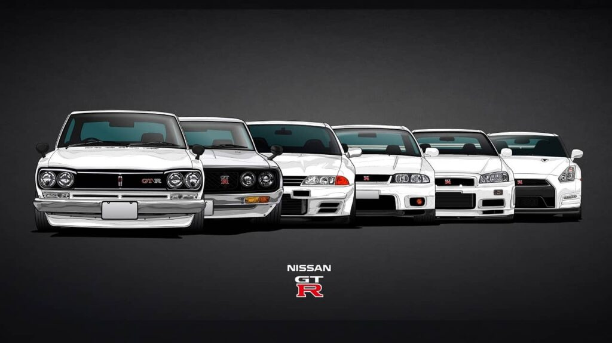
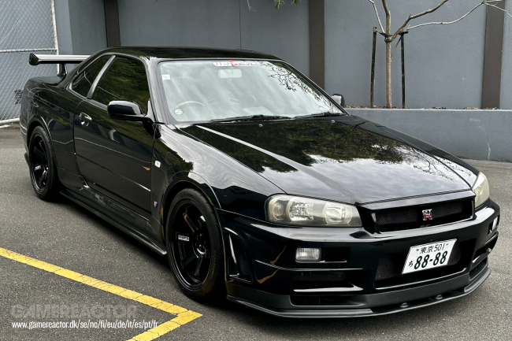
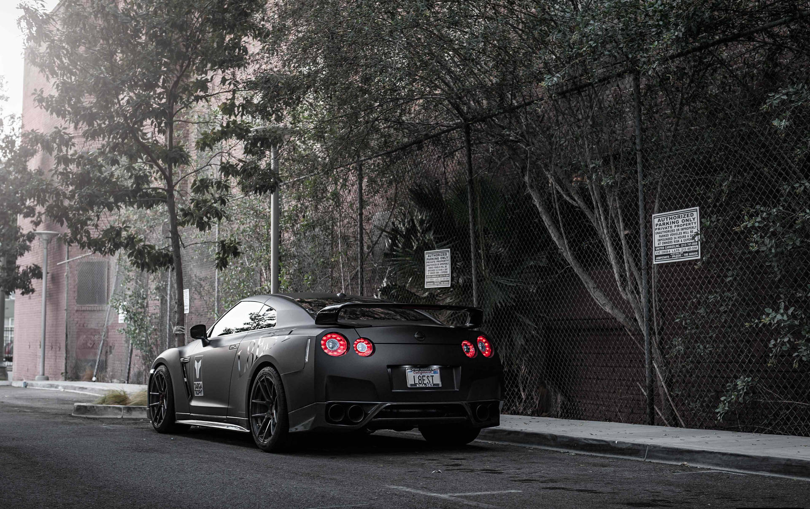
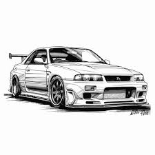
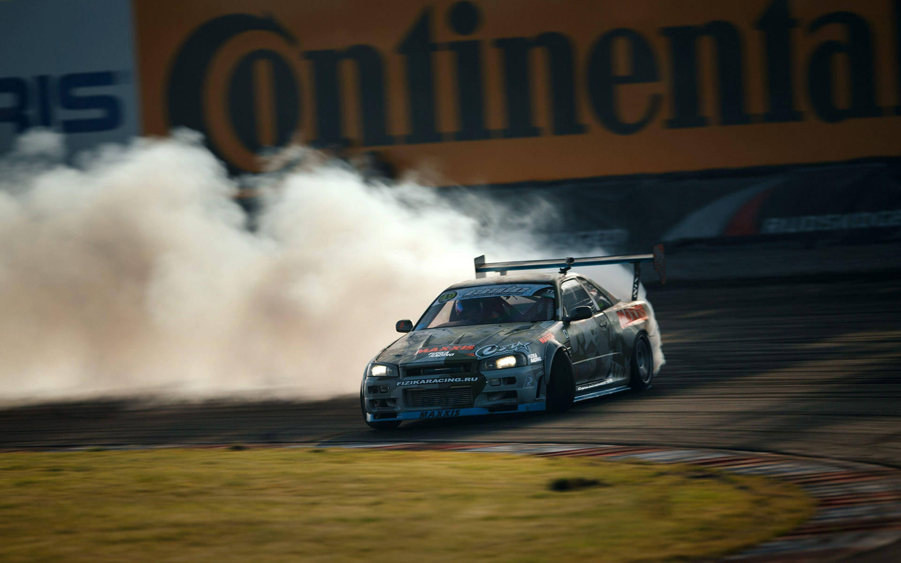
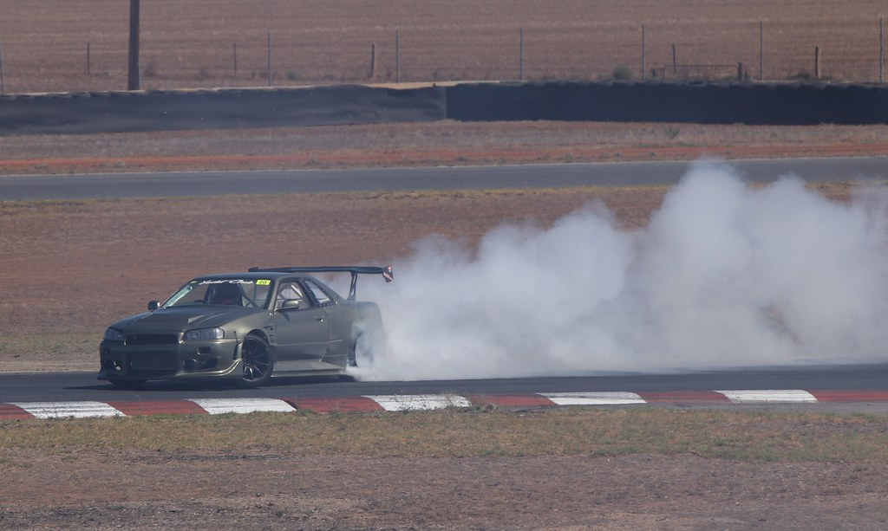
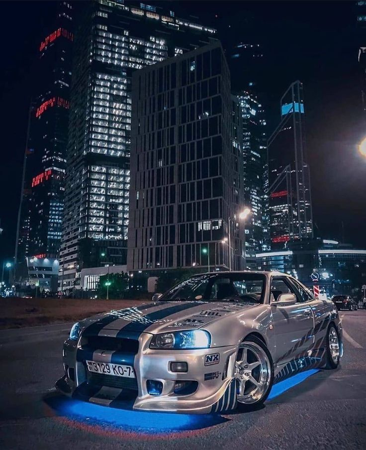
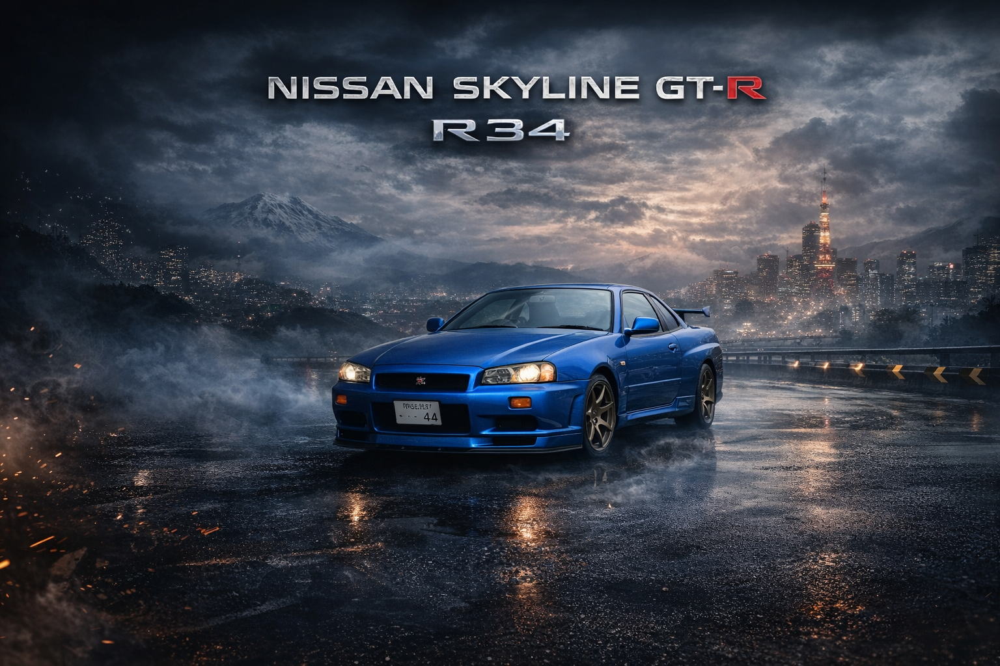
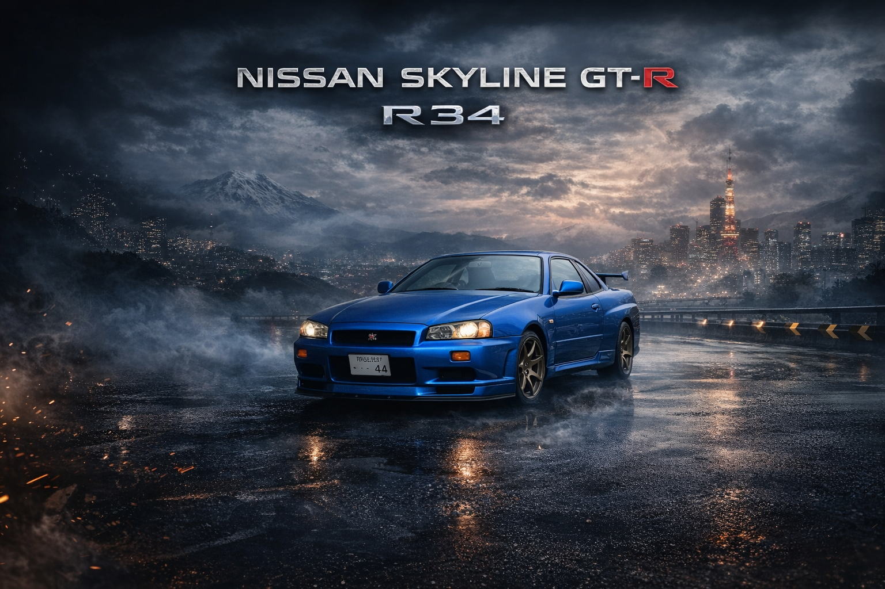

Nissan Skyline R34
HISTÓRIA
O Nissan Skyline GT-R R34 é um dos modelos mais icônicos da história do automobilismo japonês. Lançado em 1999, ele representou a culminação de décadas de evolução tecnológica da linha Skyline, reunindo desempenho, precisão e um estilo agressivo que marcaria gerações. Seu motor RB26DETT, um seis-cilindros biturbo lendário, entregava potência robusta e grande potencial para preparação, consolidando o R34 como um dos carros mais respeitados no mundo do tuning.
A história do R34, porém, não começa nele. Seus antecessores foram fundamentais para moldar sua identidade. O R32 GT-R, lançado em 1989, foi quem trouxe de volta o nome “GT-R” após um hiato de quase duas décadas e dominou as pistas, especialmente no Grupo A, garantindo o apelido de “Godzilla” pela imprensa australiana. Já o R33 GT-R, de 1995, refinou a tecnologia e introduziu melhorias no sistema de tração integral ATTESA E-TS e na direção integral Super-HICAS, criando a base para a evolução que culminaria no R34.
SKYLINE GT-R R34
O Skyline R34 herdou tudo isso e foi além. Com um chassi mais curto e rígido, respostas mais imediatas e o icônico painel digital MFD (Multi-Function Display) desenvolvido com auxílio da Nismo, ele levou o conceito de carro esportivo japonês ao limite da sua era. Sua presença em competições, em videogames e na cultura pop — especialmente em filmes e séries automotivas — ampliou sua fama para além das fronteiras do Japão.
A influência do R34 pode ser vista até hoje. O Nissan GT-R R35, embora não carregue mais o nome “Skyline”, segue a filosofia de entregar alta tecnologia, desempenho extremo e tração inteligente, conceitos moldados pelos GT-R anteriores. Além disso, o estilo robusto, os faróis agressivos e a busca por equilíbrio entre motor, eletrônica e aerodinâmica são heranças diretas do R34 e de sua linhagem.
Assim, o Nissan Skyline GT-R R34 não é apenas um carro icônico: é um marco cultural e tecnológico que honra o legado de seus antecessores e continua inspirando os modelos mais modernos da Nissan e de toda a indústria automotiva.
ESPORTE
O Nissan Skyline GT-R R34 se tornou um símbolo não apenas das ruas, mas também dos esportes a motor, com destaque especial para o drift. Embora não tenha sido o carro mais comum nas competições de derrapagem — por ser pesado e equipado com tração integral — o R34 mostrou sua força nas mãos de pilotos experientes, que exploraram seu sistema ATTESA para ajustar a distribuição de torque e transformar o “Godzilla” em uma máquina surpreendentemente ágil nas curvas.
Sua presença marcante em eventos, demonstrações e na cultura do drift ajudou a consolidar a imagem do modelo como um ícone versátil. Além disso, sua linhagem, herdada de carros como o R32 e o R33, já carregava um histórico de competitividade no automobilismo, o que só reforçou seu respeito dentro do esporte. Assim, mesmo não sendo o carro mais típico das pistas de derrapagem, o R34 ganhou espaço e admiração, contribuindo para a popularização do drift e mantendo viva a influência dos GT-R nas modalidades esportivas até hoje.
CINEMA
No cinema, o Nissan Skyline GT-R R34 alcançou status lendário ao aparecer na franquia Velozes e Furiosos, onde se tornou o carro preferido do personagem Brian O’Conner, interpretado por Paul Walker. A forte presença do R34 nas telas especialmente em “+Velozes +Furiosos” e “Velozes e Furiosos 4” ajudou a eternizar o modelo no imaginário popular. Seu visual marcante, seu desempenho e a ligação emocional criada pelo protagonista transformaram o R34 em um ícone cultural, associando-o diretamente à paixão, velocidade e estilo que definem a saga.
 
